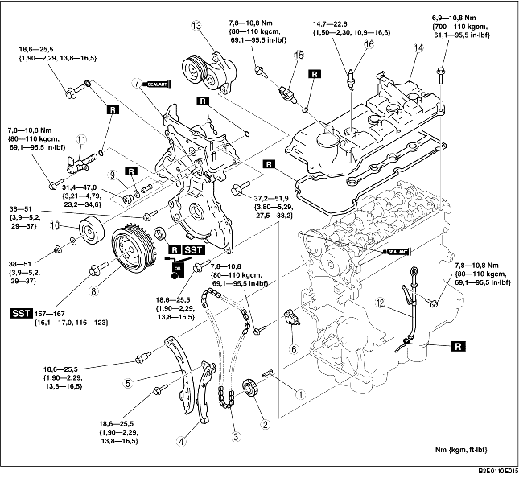

1. Plaats de onderdelen in de aangegeven volgorde, zie de tabel.

.
1. Breng de spiebaan van het krukastandwiel in lijn met het merkteken voor de timing. Zet vervolgens cilinder nr. 1 in BDP.
2. Breng de merktekens op de nokkenastandwielen in lijn met het bovenste pasvlak van de cilinderkop.
3. Plaats de distributieketting.
4. Plaats de kettinggeleider en de geleider van de kettingspanner.
5. Plaats de kettingspanner en verwijder de draad of de paperclip. (Verwijder de geplaatste aanslag bij het plaatsen van een nieuwe kettingspanner.)
6. Controleer of de distributieketting niet te los zit. Controleer vervolgens of alle tandwielen op de juiste plaats zitten.
7. Controleer de kleptiming door de krukas tweemaal rechtsom te draaien.
1. Breng siliconenpakking aan op het voorste distributiedeksel zoals aangegeven in de afbeelding.
2. Draai de bevestigingsbouten van het voorste distributiedeksel in de aangegeven volgorde vast.
|
Plaats |
Aanhaalmoment |
|
9
|
7,8-10,8 Nm {80-110 kgcm, 69,1-95,5 in·lbf}
|
|
1-6, 8, 10, 12-15, 17, 18
|
18,6-25,5 Nm {1,90-2,29 kgm, 13,8-16,5 ft·lbf}
|
|
7, 11, 16
|
37,2-51,9 Nm {3,80-5,29 kgm, 27,5-38,2 ft·lbf}
|
3. Plaats de oliekeerring met SST.
4. Plaats het oliefilter op de plug en plaats deze op de aangegeven manier in het distributiedeksel.
1. Houd de meeneemplaat (ATX) of het vliegwiel (MTX) met SST tegen.
2. Draai de bevestigingsbout van de krukaspoelie vast.
1. Breng siliconenpakking aan zoals aangegeven in de afbeelding.
2. Draai de bevestigingsbouten van het kleppendeksel in de aangegeven volgorde vast.